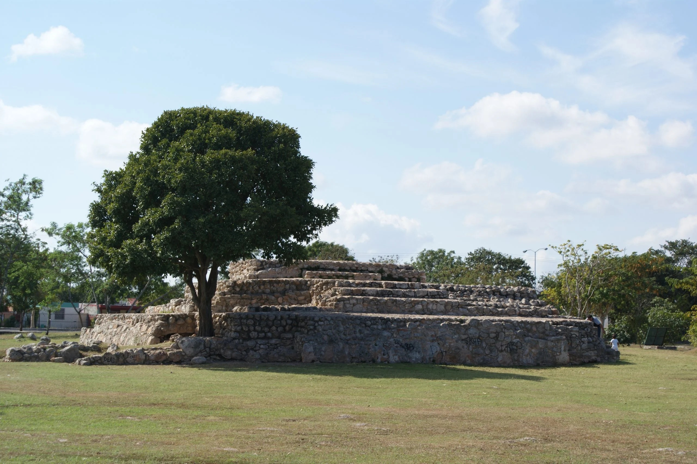

Desde la década de 1970, la expansión desmedida de la mancha urbana en la ciudad de Mérida propició una gran demanda de proyectos e intervenciones arqueológicas con carácter de rescates y salvamentos. Con la intención de evidenciar la ocupación prehispánica de la ciudad se procuró la conservación de algunos restos arquitectónicos como espacios destinados a su visita y disfrute, insertos en parques o áreas verdes de los futuros fraccionamientos en crecimiento. Hoy por hoy, los parques arqueológicos presentan diversas dinámicas en sus entornos inmediatos que van desde la apropiación a la desvinculación de los mismos, espacios vistos como áreas inútiles o que salen del “estándar” de parque. La falta de información visible en estos espacios que explique de alguna manera la importancia de las estructuras, su función y los motivos de su presencia en los espacios públicos, es una de las grandes carencias con relación a los usuarios y la valorización a los vestigios. Sin embargo, en los últimos años, los esfuerzos entre asociaciones civiles, municipio e instancias federales junto con los usuarios inmediatos, resultaron en actividades para su apropiación y conservación.
Gran parte del actual Centro Histórico y sus alrededores se construyeron sobre la antigua metrópoli maya, cuyos materiales fueron reutilizados para levantar los edificios coloniales. A pesar de la destrucción y la rápida expansión urbana de las últimas décadas, la ciudad mantiene un rico patrimonio arqueológico.
Existen más de 20 sitios arqueológicos registrados en el contexto urbano meridano. Para garantizar su conservación, el Ayuntamiento de Mérida implementa estrategias de gestión y protección que integran a investigadores del Instituto Nacional de Antropología e Historia (INAH) y a los propios vecinos de las colonias, quienes muchas veces fungen como guardianes de estos vestigios históricos.
Gran parte del actual Centro Histórico y sus alrededores se construyeron sobre la antigua metrópoli maya, cuyos materiales fueron reutilizados para levantar los edificios coloniales. A pesar de la destrucción y la rápida expansión urbana de las últimas décadas, la ciudad mantiene un rico patrimonio arqueológico.
Existen más de 20 sitios arqueológicos registrados en el contexto urbano meridano. Para garantizar su conservación, el Ayuntamiento de Mérida implementa estrategias de gestión y protección que integran a investigadores del Instituto Nacional de Antropología e Historia (INAH) y a los propios vecinos de las colonias, quienes muchas veces fungen como guardianes de estos vestigios históricos.